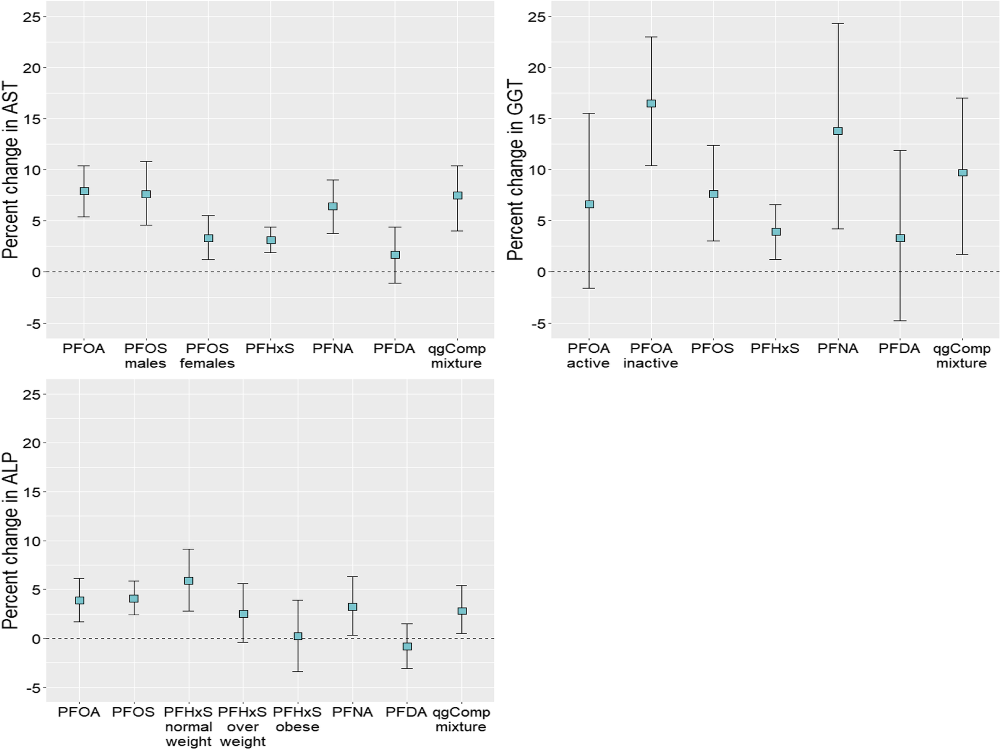

1. PFAS mixture and liver enzymes — Canadian Health Measures Survey
Borghese et al., 2022 · nationally representative cross-sectional analysis

Reported result
A one-quartile joint mixture increase was associated with 7.5% higher AST (95% CI 4.0–10.4), 9.7% higher GGT (1.7–17.0), and 2.8% higher ALP (0.5–5.4). No consistent association was observed with ALT or total bilirubin.
Proposal implication
PFAS mixtures and these liver enzymes have already been analyzed with quantile g-computation. Repeating the same analysis is not novel; external validation and transportability are more defensible contributions.
Source: Borghese et al., Environmental Health (2022). Figure reproduced under the article’s open-access license.